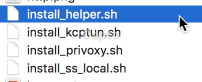
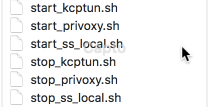
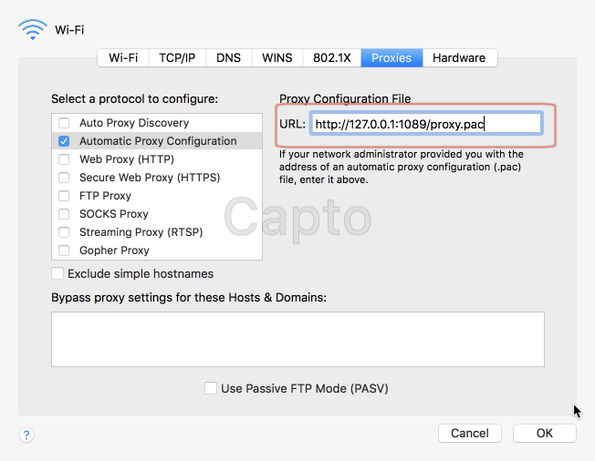

ShadowsocksX-NG 是官方支持的 macOS 下的 shadowsocks 客户端，支持诸多 shadowsocks 协议的特性，今天我们来分析一下它的工作原理。
先看一下 ShadowsocksX-NG.app 中的内容，首先注意的是几个脚本：
 
install 脚本是将相应的二进制文件复制到相应的目录中，start 脚本 是通过 launchctl 命令 load 相应的 plist 文件， stop 脚本是 unload 相应的 plist 文件。
其实 ShadowsocksX-NG 只是 Swift 写的一个 GUI 而已，主要的代理程序还是直接使用了 shadowsocks-libev 编译好的 ss-local 程序。ss-local 启动后监听在 1080 端口，接受 socks 协议的请求。
对于 http 协议的代理，则是集成了 privoxy 程序，监听在 1087 端口，然后转发到 1080 端口上，实现对 http 协议的代理。
另外还有集成了一个 kcptun，不过好像没有启动。
还有一个 pac server，监听在 1089 端口，用来给系统代理提供 PAC 文件，比如系统的网络配置中的 Proxy Configuration File:

这样使用系统代理的程序就可以自觉地访问本地的 1080 端口，省去了手动配置的操作。
ShadowsocksX-NG 也提供了 Manaul Mode，在此模式下，不会设置系统代理，所有的应用都需要手动配置。
所以 ShadowsocksX-NG 只是做了这么几个工作而已：
- 集合 ss-local, privoxy 和 kcptun
- 提供配置界面
- 提供系统代理配置
- 提供开机自启，PAC 文件更新